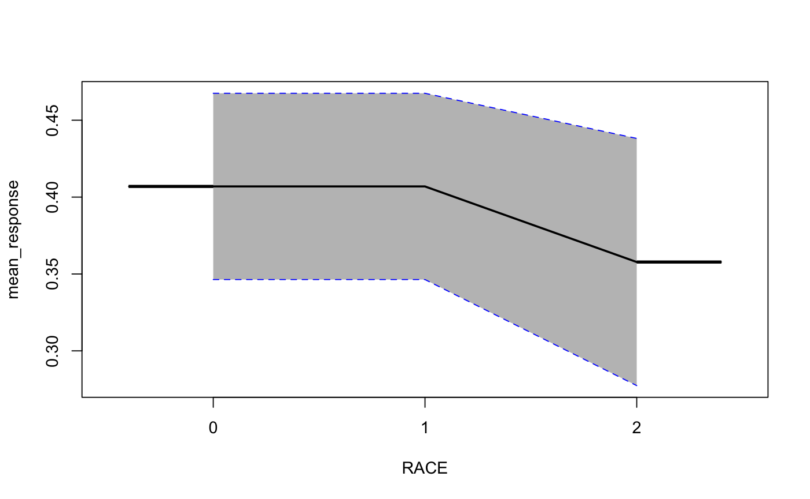

Partial dependence plot gives a graphical depiction of the marginal effect of a variable on the response. The effect of a variable is measured in change in the mean response. Note: Unlike randomForest's partialPlot when plotting partial dependence the mean response (probabilities) is returned rather than the mean of the log class probability.
h2o.partialPlot(object, data, cols, destination_key, nbins = 20, plot = TRUE, plot_stddev = TRUE)
| object | An H2OModel object. |
|---|---|
| data | An H2OFrame object used for scoring and constructing the plot. |
| cols | Feature(s) for which partial dependence will be calculated. |
| destination_key | An key reference to the created partial dependence tables in H2O. |
| nbins | Number of bins used. For categorical columns make sure the number of bins exceed the level count. |
| plot | A logical specifying whether to plot partial dependence table. |
| plot_stddev | A logical specifying whether to add std err to partial dependence plot. |
Plot and list of calculated mean response tables for each feature requested.
#> Reading in config file: ./../../../../.h2oconfig #> Connection successful! #> #> R is connected to the H2O cluster: #> H2O cluster uptime: 3 days 4 hours #> H2O cluster timezone: #> H2O data parsing timezone: #> H2O cluster version: 3.17.0.99999 #> H2O cluster version age: 3 days #> H2O cluster name: terrytangyuan #> H2O cluster total nodes: 1 #> H2O cluster total memory: 15.82 GB #> H2O cluster total cores: 8 #> H2O cluster allowed cores: 8 #> H2O cluster healthy: TRUE #> H2O Connection ip: localhost #> H2O Connection port: 54321 #> H2O Connection proxy: NA #> H2O Internal Security: FALSE #> H2O API Extensions: XGBoost, Algos, AutoML, Core V3, Core V4 #> R Version: R version 3.4.2 (2017-09-28) #>prostate.path <- system.file("extdata", "prostate.csv", package="h2o") prostate.hex <- h2o.uploadFile(path = prostate.path, destination_frame = "prostate.hex")#> | | | 0% | |======================================================================| 100%prostate.hex[, "CAPSULE"] <- as.factor(prostate.hex[, "CAPSULE"] ) prostate.hex[, "RACE"] <- as.factor(prostate.hex[,"RACE"] ) prostate.gbm <- h2o.gbm(x = c("AGE","RACE"), y = "CAPSULE", training_frame = prostate.hex, ntrees = 10, max_depth = 5, learn_rate = 0.1)#> | | | 0% | |======================================================================| 100%h2o.partialPlot(object = prostate.gbm, data = prostate.hex, cols = c("AGE", "RACE"))#> | | | 0% | |======================================================================| 100%#> [[1]] #> PartialDependence: Partial Dependence Plot of model GBM_model_R_1512747612023_1341 on column 'AGE' #> AGE mean_response stddev_response #> 1 43.000000 0.340920 0.000000 #> 2 44.894737 0.340920 0.000000 #> 3 46.789474 0.340920 0.000000 #> 4 48.684211 0.340920 0.000000 #> 5 50.578947 0.340920 0.000000 #> 6 52.473684 0.340920 0.000000 #> 7 54.368421 0.400918 0.000000 #> 8 56.263158 0.411775 0.000000 #> 9 58.157895 0.531324 0.000000 #> 10 60.052632 0.495766 0.000000 #> 11 61.947368 0.395732 0.000000 #> 12 63.842105 0.290884 0.000000 #> 13 65.736842 0.445585 0.000000 #> 14 67.631579 0.478502 0.010935 #> 15 69.526316 0.418231 0.037242 #> 16 71.421053 0.359616 0.030185 #> 17 73.315789 0.395481 0.032649 #> 18 75.210526 0.402122 0.034800 #> 19 77.105263 0.382946 0.033939 #> 20 79.000000 0.382946 0.033939 #> #> [[2]] #> PartialDependence: Partial Dependence Plot of model GBM_model_R_1512747612023_1341 on column 'RACE' #> RACE mean_response stddev_response #> 1 0 0.406944 0.060572 #> 2 1 0.406944 0.060572 #> 3 2 0.357772 0.080382 #>